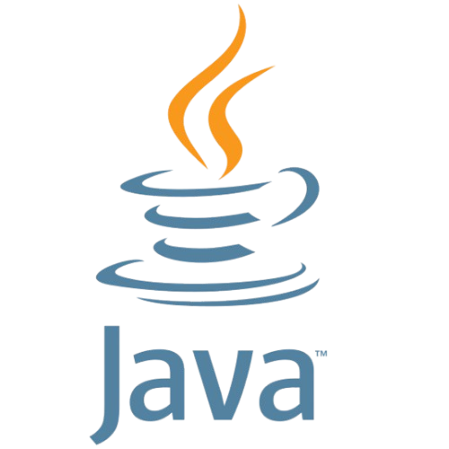
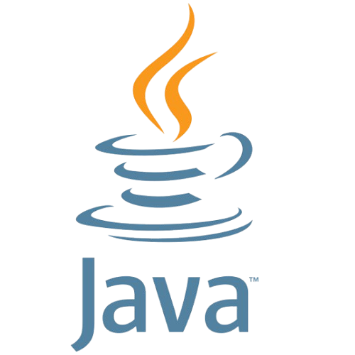

Pranjal Choudhury
I am
a physicist
Download My CV
I am
a physicist
Download My CVI am a physics student specializing in optics, with experience in theoretical, computational, and experimental optics, focusing on imaging. My PhD work involves designing a clinical grade super resolution microscope for application in biomedical optics, and I am currently developing a near-real-time image reconstruction methodology for Single Molecule Localization Microscopy. The work involves various aspects of algorithm development and image processing including the use of Machine Learning / Deep Neural Networks. Additionally I am exploring the application of structured light and adaptive optics. I am actively involved with SPIE and OPTICA, organizing scientific outreach programs, talks, and hands-on workshops to promote science and optics. Outside of research, I enjoy reading both fiction and non-fiction. I also have a deep interest in studying India’s rich history and cultural heritage. Additionally, I am a passionate football fan and a dedicated supporter of NorthEast United FC and FC Barcelona.

| Qualification | Board/University | Year | |
|---|---|---|---|
|
|
Class 10 | Central Board of Secondary Education | 2012 |
| Class 12 | Assam Higher Secondary Education Council | 2014 | |

|
Integrated M.Sc | Tezpur University | 2019 |
| PhD | IIT Guwahati | 2020-present | |
| Visiting PhD | Imperial College London | 2024 |

 

Here are some useful websites for exploring physics and programming:
| Subject | Book Title and Author |
|---|---|
| Mathematical Physics |
Mathematical Methods for Physicists: Arfken & Weber Mathematical Physics: H.K. Dass |
| Classical Mechanics |
Classical Mechanics: Herbert Goldstein Classical Mechanics: J.C. Upadhyay (because I found Goldstein book difficult) |
| Electrodynamics | Introduction to Electrodynamics: David J. Griffiths |
| Quantum Mechanics |
Introduction to Quantum Mechanics: David J. Griffiths Quantum Mechanics Concepts and Applications: Nouredine Zettili Principles of Quantum Mechanics: R. Shankar |
| Statistical Mechanics |
Fundamentals of Statistical and Thermal Physics: Frederick Reif Statistical Mechanics: Raj Kumar Pathria |
| Condensed Matter Physics |
Introduction to Solid State Physics: Charles Kittel Solid State Physics: Ashcroft and Mermin |
| Electronics |
Semiconductor Physics and Devices: Donald Neamen Electronic Devices and Circuit Theory: Louis Nashelsky and Robert Boylestad (selected readings) |
| Optics |
Introduction to Optics: Pedrotti Introduction to Fourier Optics: Joseph W. Goodman Principles of Optics: Born & Wolf |
Department of Physics
Indian Institute of Technology Guwahati, 781039
Assam, India